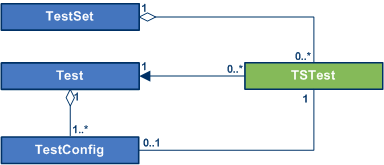
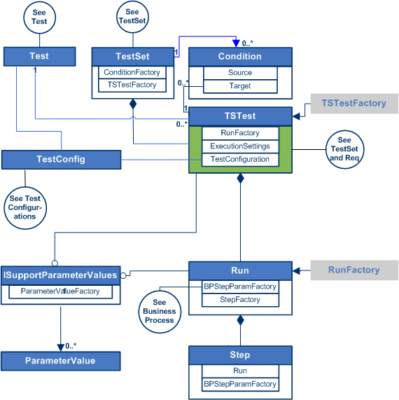
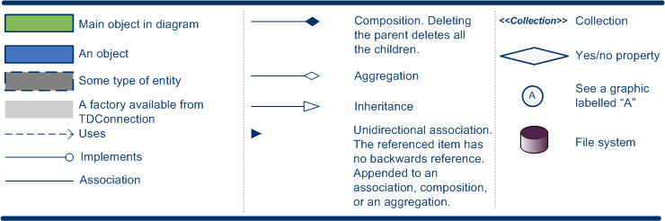

A TSTest object is a test instance based on a planning Test object. The TSTest takes the data for the run from one of the Test's configurations or from static data entered by user. TSTests are grouped into TestSets. When a TestSet is executed, each of the test instances in the set is run. A TSTest can also be run individually.

More than one instance of the same planning Test can be included in a test set.
There can be Conditions that must be met before a test instance is run. The conditions for the TSTests are managed by the TestSet's ConditionFactory. The Condition.Source is the condition that must be met, such as the successful completion of a previous TSTest run. The Condition.Target is the TSTest that is run when the condition is met.
Each execution of a TSTest is represented by a Run object. The run inherits the steps and parameters of the planning test. The actual parameter values can be set either at the TSTest level or at the Run level.
The tree structure consists of TestSetFolder objects that contain TestSet objects. The TestSet objects contain TSTest objects.

BusinessProcess on Business Process Testing
Req on Requirements Specification
Test on Test Planning
Test Configurations on Test Configurations
TSTest on Test Execution
